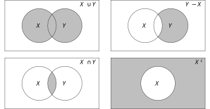
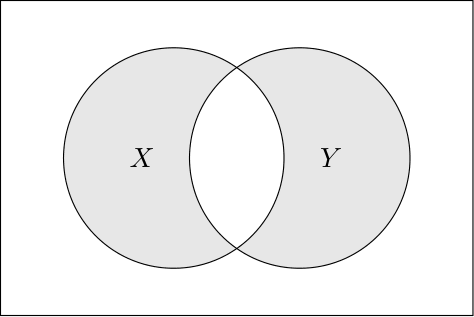
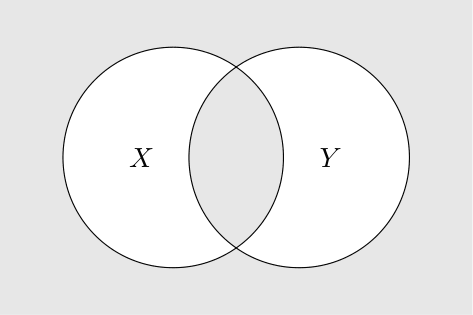
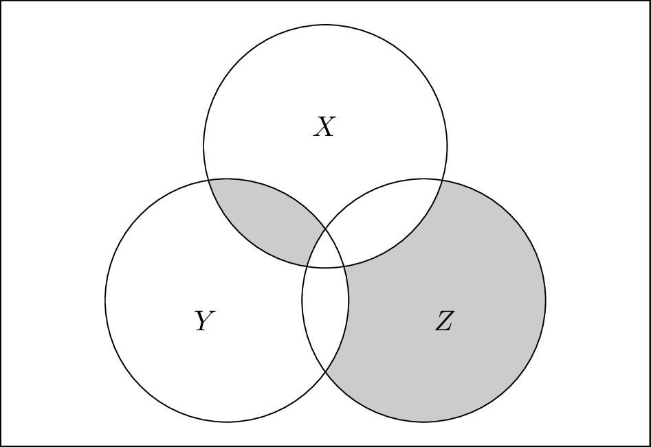

1 Argument, Validity & Proof
1.1 Reasoning about Reasoning
Logic, in the most general sense of the term, refers to the study of the norms that govern the activity of reasoning. In this broad sense, logic concerns not only the sort of reasoning expressed in mathematical proofs but also such reasoning as underwrites a statistical inference or the confirmation of a scientific theory. If we further countenance informal methods of reasoning, the scope of logic grows wider still, comprehending such rhetorical forms of argumentation as one might encounter in a philosophy text or a newspaper editorial and even those vague heuristics and patterns of inference summarized by the phrase “common sense”. Given such a wide scope of application, any introduction to logic must begin with a suitably delimited statement of its intended subject matter.
A more apt description of this course would be an ‘Introduction to Deductive Logic’, for our concern will not be with reasoning in general, but only with a very specific sort of reasoning, namely, the sort of reasoning which is termed deduction. To deduce something means to show that its truth follows necessarily from other claims that we take to be true, in brief, it is to prove it, in roughly the sense of proof with which we are all acquainted from our prior courses in mathematics. Thus, deductive reasoning is what we do when we derive a theorem in geometry from more basic claims, or axioms, characterizing elementary geometrical notions such as points, lines, planes, and the like. It is also what we do when we reason that a ‘7’ must belong in a certain empty square on a Sudoku board by ruling out all other possibilities, or when we conclude that Mary is right to say that John must be lying, when he says that both he and Mary have spoken truly. It is not what we do when we conclude (perhaps reasonably) that our lottery ticket will not make us rich, nor what Oedipus did when he solved (perhaps brilliantly) the riddle of the Sphinx. Reasoning, in the broad sense of the term, is surely at work in both of these cases, but in neither is anything deduced, in neither is anything proven to be true.
Now, in this course we will be studying the topic of deductive reasoning. In so doing, we will have many occasions ourselves to reason deductively. While reasoning about reasoning may seem to involve us in a circle, as long as we are careful, this circle need not be a vicious one. Indeed, if you continue on in your study of logic beyond this course, you will quickly come to discover that it is the essentially self-reflexive nature of logic which endows the subject not only with its peculiar charm, but also with no small part of its philosophical value. For, if logic is concerned to study reasoning and if, at the same time, its results are arrived at by means of reasoning, then one may meaningfully ask what follows when the claims established in the study of logic are applied to itself. The answer, as it turns out, is quite a lot! The essentially circular nature of logic is what enabled the discovery of such landmark results as Gödel’s famous incompleteness theorems, among the corrolaries of which are such provocative theses as “arithmetical truth cannot be defined arithmetically”, and “if a computer can simulate all of our mathematical reasonings, then, in principle, we cannot fully grasp how it works”.
But let’s not get ahead of ourselves! In order to reflect seriously on the philosophical import of such claims, one must first understand what exactly they mean, and, for this, we require a thorough understanding of the basic concepts of deductive logic. These are the concepts of argument, validity, and proof. In the remainder of this chapter, we will consider each of these concepts in turn, with an eye to understanding how it is that, in logic, we will reason about reasoning.
1.2 Arguments
Logic seeks to investigate the norms that govern the activity of reasoning. It is thus concerned to investigate the general conditions under which reasoning leads to good—or, to use the logician’s preferred approbative, valid—arguments. As students of logic, we are thus confronted with a number of preliminary questions that must be answered before our inquiry can get going:
What exactly is an argument?
What does it mean for an argument to be valid?
What is reasoning and how is it involved in argumentation?
Let us begin with the first of these questions and think a bit about what an argument is and how we ought to represent arguments.
When we give an argument, we proceeds from certain claims that we take to be true. On the basis of these claims we conclude that something else is true. In logic, we refer to the claims from which an argument proceeds as the premises of that argument, and we refer to the claim to which we are led by an argument as its conclusion. If we write down the premises of an argument in a comma-separated list, and mark them off from the argument’s conclusion by a horizontal line, the following are all arguments:
\[ \frac{\textrm{All humans are mammals}\hspace{2mm},\hspace{2mm}\textrm{No mammals are cold-blooded}}{\textrm{No humans are cold-blooded}} \]
\[ \hspace{2mm} \]
\[ \frac{\textrm{Either the bus is late or Anna slept in}\hspace{2mm},\hspace{2mm}\textrm{When it does not rain, the bus arrives on time}\hspace{2mm},\hspace{2mm}\textrm{It is not raining}}{\textrm{Anna slept in}} \]
\[ \hspace{2mm} \]
\[ \frac{\textrm{Every student in the seminar recommended an article to the professor}}{\textrm{Some article was recommended to the professor by every student}} \]
Note that the first of these arguments has two premises, the second has three, and the third has one, but all of the arguments have a single conclusion. Also note that while the first two of these arguments are intuitively valid, the third is not.
Now, despite the fact that here we are using English formulations, it may be natural to regard the claims made in an argument as non-linguistic abstractions from the specific sentences that are used to express those claims in a particular language. Thus, for example, the first of the three arguments given above can be formulated in German as follows:
\[ \frac{\textrm{Alle Menschen sind Säugetiere}\hspace{2mm},\hspace{2mm}\textrm{Keine Säugetiere sind kaltblütig}}{\textrm{Keine Menschen sind kaltblütig}} \]
If this class were to be taught in German, and I were to have written this latter argument on the board in place of the first of the three arguments given above, then, presumably, despite the shift in language, I would have presented you with one and the same argument.
It is tempting, therefore, to think of arguments as being made up of claims, or thoughts, that can be equally well be expressed in any number of different languages. Nevertheless, for the purpose of representing arguments as objects about which we ourselves will be reasoning, it will be helpful to be more concrete and to disregard the intuitive difference between an argument in thought and its linguistic formulation. Thus, we will construe arguments as linguistic constructs. In other words, we will represent an argument by a particular collection of sentences expressed in a given language.
Will any sentence do to serve as the premise or conclusion of an argument? The grammatical concept of a sentence in English is that of a closed, self-contained linguistic unit including at least one independent clause. But sentences in English, thus understood, can serve a variety different functions. The four functional categories of sentences that usually appear in grammar textbooks are as follows:
- Declarative Sentences - A sentence that is used to declare or to assert something (“The class begins at noon.”)
- Interrogative Sentences - A sentence that is used to ask a question (“When does the class begin?”)
- Imperative Sentences - A sentence that is used to issue a command or a request. (“Please arrive to class on time.”)
- Exclamatory Sentences - A sentence that is used to express an attitude or state of mind. (“What an amazing lecture!”)
When we give an argument, we assert things, either so as to make it clear what our reasons are for accepting a conclusion, or else to make it clear what we are accepting on the basis of those reasons. Thus, questions, commands, and exclamation, in so far as they do not assert anything, cannot straightforwardly appear in arguments. If they occur in argumentative text, they usually have to be paraphrased into declarative form before the argument can be laid out clearly. For example, a text which begins with the question “Should we raise the minimum wage?”, and then goes on to answer this question in the negative is really giving an argument the conclusion of which is the declarative sentence “We should not raise the minimum wage”.
Thus, only declarative sentences can serve as the premises or conclusion of an argument. Let us now think a bit more carefully about what a declarative sentence is. As a first pass, we might think to define a declarative sentence as any sentence which can be used to make a claim about how the world is, or, what is actually the case. But what then should we make of the following sentences?
\[ \textrm{Either John or Mary was at the party.} \]
\[ \textrm{If the match is struck, it will light.} \]
In a sense, one might think that the first of these sentence does not really make a claim about the world, since it fails to specify whether it was John or Mary who, in fact, attended the party. The same can be said of the second sentence. It does not say what is the case, but only what would be the case (namely, that the match would light), on the condition that something else is the case (namely, that the match is struck). But, these sorts of claims should certainly be allowed to appear in arguments, as in:
\[ \frac{\textrm{Either John or Mary was at the party}\hspace{2mm},\hspace{2mm}\textrm{John stayed home}}{\textrm{Mary was the party}} \]
or
\[ \frac{\textrm{If the match is struck, it will light}\hspace{2mm},\hspace{2mm}\textrm{The match did not light}}{\textrm{The match was not struck}} \]
What allows these claims to figure in arguments is simply that they are the sort of claims which can be either true or false. Even if a declarative sentence is uninformative or hypothetical, it remains truth-evaluable. Thus, it remains either true or false that either John or Mary was at the party, and, likewise, it is either true or false that if the match is struck, it will light. So, we may take truth-evaluability to be our basic standard of which sentences can serve as the premises or conclusion of an argument.
Let us return now to the question of what language we ought to use to formulate our arguments. English seems a reasonable enough choice, given that it is the only language which can be safely assumed is spoken fluently by any participant in this course. Yet, at the same time, English (or any other natural language, for that matter) turns out not to be a particularly good choice. For the English language is exceedingly complex, and much of this complexity is simply unnecessary for capturing the differences in meaning that are relevant for formulating the particular arguments with which we will be concerned. For example, while there may be some subtle difference in meaning between the English sentences “John gave the letter to Mary” and “Mary was given the letter by John”, this difference in meaning, while relevant perhaps for producing a desired literary effect, is altogether irrelevant for judging whether or not it follows from this claim that, say, “Mary was given something by someone”. Consequently, to avoid overcomplicating things, if our sole aim is to study such inferential relations, we may as well do so in a language whose grammar ignores the distinction between active and passive voice constructions.
Or consider, again, the argument discussed earlier:
\[ \frac{\textrm{All humans are mammals}\hspace{2mm},\hspace{2mm}\textrm{No mammals are cold-blooded}}{\textrm{No humans are cold-blooded}} \]
The sentence “All humans are mammals” has any number of obviously equivalent formulations in English, for example:
- Every human is a mammal.
- Whatever is a human is a mammal.
- Anything that is a human is a mammal.
- If something is a human, then it is a mammal.
- Being a mammal is a property possessed by all humans.
From a logical perspective, the syntactic variation exhibited by these sentences is wholly irrelevant to their argumentative significance since all of these sentences are true under exactly the same conditions. Why, one might ask, does natural language allow so many synonymous forms, which from the perspective of logic seem entirely redundant? The answer is that a natural language such as English is not just a tool for reasoning, but serves many other purposes as well. Natural language has to support poetic effect, rhythm, emphasis, and stylistic variation, all of which require flexibility in its syntax, and it also has to support efficient reference in discourse, where shifting the subject or using anaphora can make communication smoother and less repetitive. In short, natural language is shaped not just by the demands of logic, but by the broader needs of expression, narrative, and efficient communication.
But the aim of this class is to study reasoning, and so, to avoid unnecessary complexity, we would do better to employ a language expressly designed for the sole purpose of representing certain argument forms. We might, for example, limit ourselves to a small fragment of English in which the only declarative sentences are those of the form:
- All \(A\)s are \(B\)s
- No \(A\)s are \(B\)s
- Some \(A\)s are \(B\)s
- Some \(A\)s are not \(B\)s
(Here \(A\) and \(B\) stand for terms—general noun phrases or adjectives—like ‘human’ or ‘cold-blooded’.) Or since we have departed from natural language already, we might simply go one step further, and formulate arguments in a wholly artificial language of our own invention, constructed exactly to suit our needs, and with a minimum of extraneous syntactic complexity. For instance, we might express the above four sentence forms as follows:
- All(\(A\), \(B\))
- No(\(A\), \(B\))
- Some(\(A\), \(B\))
- Some-not(\(A\), \(B\))
Or using an infix notation to avoid the need for commas and parentheses, we might simply write:
- \(A\textrm{\textbf{a}}B\)
- \(A\textrm{\textbf{n}}B\)
- \(A\textrm{\textbf{s}}B\)
- \(A\textrm{\textbf{sn}}B\)
At some point, the choice as to what syntax to adopt in our artificial, or formal, language is arbitrary. For example, the expressions \(\textrm{\textbf{a}}, \textrm{\textbf{n}}, \textrm{\textbf{s}}\), and \(\textrm{\textbf{sn}}\) here have merely mnemonic significance. We could just as well use any expressions we like, for example, the first four vowels of the English alphabet:
- \(A\textrm{\textbf{a}}B\)
- \(A\textrm{\textbf{e}}B\)
- \(A\textrm{\textbf{i}}B\)
- \(A\textrm{\textbf{o}}B\)
The advantage of this approach is that we are now able to state, in much more precise terms, what we mean by a sentence and thus by an argument. Let us give a name to the language in which we will formulate arguments. We will call it L\(_S\) (but any name would do). The language L\(_S\) has an alphabet consisting of two kinds of symbol:
Terms: \(\,\,t_1\), \(t_2\), \(t_3\), …
Copulas: \(\,\,\textbf{a}\), \(\textbf{e}\), \(\textbf{i}\), \(\textbf{o}\)
Let us call any finite string of symbols from this alphabet an expression of L\(_S\). Which expressions of L\(_S\) are sentences? We can now define the notion precisely:
Definition 1.1 A sentence of L\(_S\) is any expression of the form:
\[ A\!\ast\!B \]
where \(A\) and \(B\) are terms, and \(\ast\) is a copula.
Sentences, thus defined, are purely syntactic constructs. They are strings of symbols devoid of any meaning. Of course, our choice of the syntax for the language L\(_S\) was guided by semantic considerations. In other words, in devising our language, we had in mind a certain conception of how various linguistic items are to be interpreted and we chose our syntax so as to ensure that the sentences in the language consist only of expressions which, when given such an interpretation, express meaningful claims.
We now have a precise definition of a sentence, and we can use this definition to precisely define what we will mean by an argument in the language L\(_S\).
Definition 1.2 An argument in the language L\(_S\) consists of (1) a set of sentences of L\(_S\), whose members are referred to as the argument’s premises; and (2) a sentence of L\(_S\) referred to as the argument’s conclusion. We denote the argument whose premises comprise the set of sentences \(\Gamma\) and whose conclusion is the sentence \(\varphi\), as follows:
\[ \Gamma\vdash\varphi \]
The new symbol ‘\(\vdash\)’ introduced in this definitions is sometimes called the ‘single turnstile’. Don’t worry about it’s odd appearance; it is just a separator, like the horizontal line that we previously used to mark off the premises of an argument from its conclusion. Its only advantage over the horizontal line is that it allows us to typeset arguments in line.
As we shall see, the precision we gain from formulating arguments in a simple language like L\(_S\) has many advantages. But it also has its costs. The first is that we now have to ‘translate’ arguments expressed in ordinary language into L\(_S\) in order to apply the various tools that we will, in subsequent sections, develop to assess their validity. In some cases, this translation exercise may be straightforward. For example, the argument, letting \(A\) be a term that stands for ‘human’, \(B\) a term that stands for ‘mammal’, and \(C\) a term that stands for ‘cold-blooded’, the English argument:
\[ \frac{\textrm{All humans are mammals}\hspace{2mm},\hspace{2mm}\textrm{No mammals are cold-blooded}}{\textrm{No humans are cold-blooded}} \]
Can be rendered in L\(_S\) as:
\[ A\textrm{\textbf{a}}B, B\textrm{\textbf{e}}C\vdash A\textrm{\textbf{e}}C \]
Other arguments may prove more challenging. Suppose, for example, you are reading a philosophy text and you encounter the following passage:
All those who, in the full exercise of reflective self-command, choose to govern their appetites rather than be governed by them, are persons whose actions deserve praise; and every person whose actions deserve praise is, by that very fact, a person of admirable character. Therefore, some individuals who have not merely acted but acted under the discipline of reason are persons of admirable character.
Translating such a passage into L\(_S\) requires some thought, because the subject and predicate terms of the various claims are somewhat more complex and expressed in non-uniform ways. Still, it can be done. In this case, let:
\(A\): a person who has acted under the discipline of reason
\(B\): a person whose actions deserve praise
\(C\): a person of admirable character
Then, the argument can be translated into L\(_S\) as follows:
\[ A\textrm{\textbf{a}}B, B\textrm{\textbf{a}}C\vdash A\textrm{\textbf{i}}C \]
Exercise 1.1 Translate the following arguments into the language L\(_S\), indicating the meaning of all the terms appearing in your translation.
(a). Some students are athletes. All athletes are disciplined people. Therefore, some students are disciplined people.
(b). All dogs are mammals. No mammals are reptiles. Therefore, no dogs are reptiles.
(c). All birds are animals. Not all animals can fly. Therefore, some birds are flightless.
(d). Not all readers who prefer difficult texts are people who appreciate ambiguity. Neither are all people who appreciate ambiguity intellectually adventurous. Therefore, some readers who prefer difficult texts are not intellectually adventurous.
(e). No citizens who routinely ignore their civic duties are fit for public office, since all people fit for public office are persons of sound judgment, and no citizens who routinely ignore their civic duties are persons of sound judgment.
Apart from the challenges involved in translation, there is a second risk that we run in opting to formulate arguments in a simple language like L\(_S\). The risk is that this language may lack the expressive resources needed to represent the meaning of the various claims involved in an argument in a precise enough way to see why that argument is valid. Consider, for example, the following, seemingly valid argument:
\[ \frac{\textrm{Some students in the class are taller than Bob}\hspace{2mm},\hspace{2mm}\textrm{Bob is taller than Carla}}{\textrm{Some students in the class are taller than Carla}} \]
We might try to translate this into L\(_S\) as follows. Let:
\(A\) = a student in the class
\(B\) = a person identical to Bob
\(C\) = a person who is taller than Bob
\(D\) = a person who is taller than Carla
The argument can then be expressed:
\[ A\textrm{\textbf{i}}C, B\textrm{\textbf{a}}D\vdash A\textrm{\textbf{i}}D \]
This, as we shall see, is not a valid argument. The difficulty here is that the language L\(_S\) does not have the resources to express complex relational facts, like “Anyone who is taller than one who is taller than Carla, is taller than Carla.” To capture such facts, we will need a logic that is more expressive than L\(_S\). By the time we get to quantificational logic, we will have introduced such a language, and so will be able to formalize the above argument in a way which will allow us to see why it is valid. But will the same concerns arise for the formal language of quantificational logic? Will we have to be concerned that there are valid arguments expressible in English that cannot be seen as valid when translated into this formalism? In one important sense, the answer is no. In fact, it turns out that the language of quantificational logic that we will introduce later on in this course is, it turns out reasonable comprehensive. Indeed, among the many impressive achievements of the landmark logical investigations into the foundations of mathematics conducted in the first half of the 20th century was the discovery that the language of quantificational logic is sufficient to comprehend all but a small fraction of the arguments that have ever been given in mathematics!
Having now addressed the question of what an argument is and how arguments will be represented in our study of logic, our next task is to inquire into what it means for an argument to be valid? Before taking up this task, however, let us pause to introduce a notion that will be central to our later discussions (and, indeed, that already appears surreptitiously in our definition of an argument), namely, that of a set.
1.3 Sets
1.3.1 Representing Sets
Sets are among the items adverted to most frequently in logical reasoning, and so it is crucial to become acquainted with the terminology and notation that is typically used to reason with and about them.
A set is a collection of objects. The most literal way to represent a set is to enclose a comma-separated list of the objects belonging to the set between curly braces. Thus, for example, the set of odd numbers between 1 and 10 may be written:
\[ \{1,3,5,7,9\} \]
The order of a list does not affect the set of objects appearing it. Nor do repetitions of those objects. Hence, the above set can also be written:
\[ \{7,3,5,1,7,5,1,9,9,9,7,5\} \]
To say that the object \(a\) belongs to the set \(X\), we write \(a\in X\) (read: ‘\(a\) is in \(X\)’ or ‘\(a\) is a member of \(X\)’). To say that \(x\) does not belong to \(X\), we write \(x\not\in X\).
Nearly every set that we will have any occasion to reference in this course will be most clearly defined not by means of a comprehensive listing of its members but rather by specifying a property possessed by all and only the members of this set. Thus, for instance, we may have occasion to refer to the set of all prime numbers, or the set of all expressions in a language of length greater than \(12\).
To denote the set of all and only those objects which possess the property \(P\), we write: \[ \{x: P(x)\} \] where ‘\(P(x)\)’ is any statement expressing the fact that \(x\) has the property \(P\). This description of the set is read: ‘the set of all \(x\), such that \(P(x)\)’. So, for example, if we wish to refer to the set of all odd, natural numbers between 1 and 10, we could write:
\[ \{n: n\textrm{ is an odd natural number and }1\leq n\leq 10\} \]
When we wish to restrict the members of a set to only those items belonging to the set \(X\), this fact can be indicated by writing \(x\in X\) on the left-hand side of the colon. The condition then appearing on the right-hand side of the colon is that which must hold of any member of \(X\) in order for it to be included in the set. So, for example, if \(\mathbb{N}\) is the set of all natural numbers, then the above set may be written:
\[ \{n\in \mathbb{N}: n \textrm{ is odd and }1\leq n\leq 10\} \]
If it is clear from the context from what set of objects the members of a defined set are to be drawn, then we may omit any explicit reference to the containing set. Thus, for example, if it is clear from the context that we are defining a set of natural numbers, then, for the above set, we may simply write:
\[ \{n: n \textrm{ is odd and }1\leq n\leq 10\} \]
Sometimes it is convenient to represent a set as that which results from applying a function to the members of another set. To refer to the set which results from applying the function \(f\) to the members of the set consisting of all and only the objects possessing the property \(P\), we write:
\[ \{f(x): P(x)\} \]
Hence, the set of all odd natural numbers between \(1\) and \(10\) may also be written:
\[ \{2n+1: 0\leq n\leq 4\} \]
Note that there is nothing to prevent a set from having other sets among its members—nor is there anything wrong with a set of sets of sets, or a set of sets of sets of sets, etc.
Exercise 1.2 Let \(S\) be the set of all sets which are not members of themselves, i.e.:
\[ S = \{X: X\textrm{ is a set and }X\not\in X\} \]
Explain why the set \(S\) cannot exist by asking whether \(S\) is a member of itself.1
Exercise 1.3 Let \(S = \{2, 4, 8, 16, 32\}\). Fill in the blanks, assuming that all sets are sets of natural numbers:
(a). \(S = \{4, 4, 2, 16, 32, 2, 4, \,\underline{\hspace{0.5cm}}\,\}\)
(b). \(S \subset \{2n: 1 \leq n < \,\underline{\hspace{0.5cm}}\,\}\)
(c). \(\{n: 1\leq n\leq 5\} = \{\,\underline{\hspace{1cm}}\,: n\in S\}\)
(d). \(S = \{\,\underline{\hspace{1cm}}\,: 1\leq n \leq 5\}\)
1.3.2 Set Relations and Operations
Two sets \(X\) and \(Y\) are equal, written \(X=Y\), if \(X\) and \(Y\) have exactly the same members, i.e., \(a\in X\) iff \(a\in Y\), for any object \(a\). The set \(X\) is a subset of the set \(Y\), written \(X\subset Y\), if every member of \(X\) is a member of \(Y\). So, for example:
\[ \{1,5,7\}\subset \{1,3,5,7,9\}. \]
Note that this implies that every set is a subset of itself, i.e., \(X\subset X\), for any set \(X\). When we need to indicate that \(X\subset Y\) but that \(X\neq Y\), we say that \(X\) is a ‘proper’ subset of \(Y\).2
Clearly, two sets are equal just in case each is a subset of the other, and one often proves the equality of two sets \(X\) and \(Y\), by first showing \(X\subset Y\) and then showing \(Y\subset X\).
One will often encounter multiple statements of set inclusion ‘chained’ together, as in:
\[ X_1\subset X_2\subset \cdots \subset X_k \]
This means that \(X_1\subset X_2\), \(X_2\subset X_3\), etc. Since, however, the subset relation is a transitive relation (i.e., for any sets \(X,Y,Z\), if \(X\subset Y\) and \(Y\subset Z\), then \(X\subset Z\)), these statements of inclusion are together equivalent to the claim that \(X_i\subset X_j\), whenever \(1\leq i\leq j\leq k\).
The union of the two sets \(X\) and \(Y\) is given by:
\[ X\cup Y= \{x: x\in X \textrm{ or }x\in Y\}. \]
The intersection of \(X\) and \(Y\) is given by:
\[ X\cap Y=\{x: x\in X\textrm{ and }x\in Y\}. \]
And the complement of \(X\) relative to \(Y\) is given by:
\[ Y-X=\{x\in Y: x\not \in X\} \]
In many contexts, there will exist some ‘universal’ set of which all the sets referred to in the discussion are assumed to be subsets. For instance, in a given context, we may only be concerned to discuss sets of natural numbers. If \(\Omega\) refers to this universal set, we write \(X^c\) in place of \(\Omega-X\), and refer to this set simply as the complement of \(X\):
\[ X^c=\{x\in \Omega: x\not\in X\} \]
The Venn diagrams in Figure 1.1 can help to visualize the effect of performing these set operations:

Exercise 1.4 Prove the following claims:
(a). If \(X\subset Y\), then \(X\cup Z\subset Y\cup Z\).
(b). \(X\subset Y\) iff \(X = X\cap Y\)
(c). \(X\subset Y^c\) iff \(Y\subset X^c\)
(d). \(X\cup(Y-X) = X\cup Y\)
(e). \(X\cap(Y\cup Z) = (X\cap Y)\cup(X\cap Z)\)
(f). \(X\cap Y = (X^c\cup Y^c)^c\)
Exercise 1.5 Name the sets whose members consist of all and only those items in the shaded regions of the following Venn diagrams:
(a).

(b).

(c).

Since the result of applying the operations of union and intersection to multiple sets does not depend on the order in which the operations are performed, there is no need to employ parentheses to determine the order of operations when expressing such sets. So, for example, without any threat of ambiguity, the union of the sets \(X_1,\ldots,X_n\) can be written:
\[ X_1\cup X_2\cup\cdots\cup X_n \]
When there is an obvious way of indexing the operand sets, we will sometimes express the union using a larger version of the operator, as follows:
\[ \bigcup_{i=1}^n X_i \]
and similarly for intersections, using the symbol \(\bigcap\).
Exercise 1.6 Let \(X\) be any subset of \(\Omega\) and let \(\mathbf{1}_X\) be the function which maps every item in \(\Omega\) to either \(0\) or \(1\) as follows:
\[ \mathbf{1}_X(x) = \left\{\begin{array}{ll} 1 & \textrm{if } x\in X \\ 0 & \textrm{if } x\not\in X \end{array}\right. \]
Let \(X\) and \(Y\) be any two subsets of \(\Omega\). Express the functions \(\mathbf{1}_{X\cap Y}\), \(\mathbf{1}_{X\cup Y}\), and \(\mathbf{1}_{X-Y}\) in terms of \(\mathbf{1}_X\) and \(\mathbf{1}_Y\).
1.3.3 The Empty Set
We would like the set-theoretic operations defined above to always yield well-defined sets. But what is the intersection of two sets that have no members in common? To give this question a definite answer, it will be convenient to assume that there exists a unique set which has no members. We will denote this set by \(\emptyset\) and refer to it as the empty set. The two defining characteristics of the empty set are as follows:
- For every property \(P\), it is (vacuously) true that, for all \(x\in\emptyset\), \(x\) has the property \(P\).
- For every property \(P\), it is (vacuously) false that, for some \(x\in\emptyset\), \(x\) has the property \(P\).
Note that from the first condition, it follows that, for any set \(X\), \(\emptyset\subset X\). To see this, let \(P\) be the property possessed by all and only those \(x\) such that \(x\in X\). From the second condition it follows that no object is a member of \(\emptyset\). To see this, consider any object \(a\), and let \(P\) be the property possessed by all and only those \(x\) such that \(x=a\).
Exercise 1.7 The power set of the set \(X\), written \(P(X)\), is the set of all subsets of \(X\), i.e.: \[ P(X) = \{Y: Y\subset X\} \]
(a). Let \(S = \{1, 2, 3, 4, 5, 6, 7\}\). How many members does \(P(S)\) have?
(b). How many members does \(P(P(S))\) have?
(c). How many members does the power set of the empty set have?
References
This is Russell’s famous paradox, revealing the inconsistency of the formalization of naive set theory given by Frege (1893-1903) in his Grundgesetze der Arithmetik. In that work, Frege assumed that any property whatsoever—including the property of not being a member of itself—could be used in the formation of a well-defined set. For a detailed discussion of the various approaches adopted by modern formalizations of set theory to avoid Russell’s paradox, see Fraenkel, Levy, and Bar-Hillel (1973).↩︎
Because the subset relation is reflexive, it is sometimes denoted \(\subseteq\) (by analogy with the weak ordering relation \(\leq\)). On this notational scheme, it is the ‘proper’ subset relation (by analogy with the strict ordering relation \(<\)) that is denoted \(\subset\). The reason we do not adopt this notation is that the reflexive subset relation occurs far more frequently than its irreflexive counterpart. Symbolic parsimony thus dictates that it be awarded the unadorned marker.↩︎